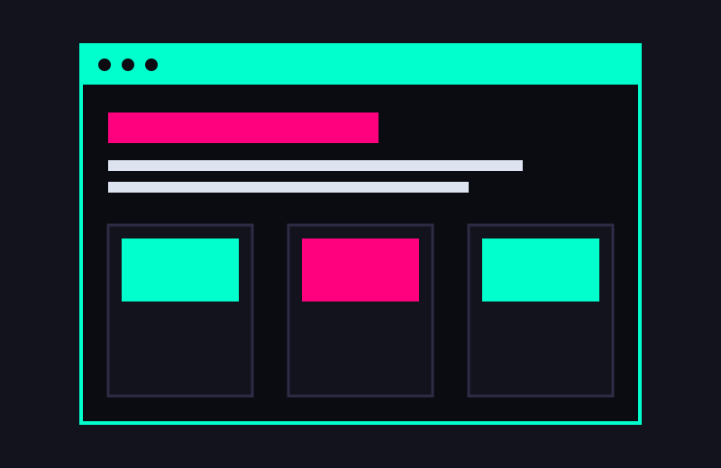
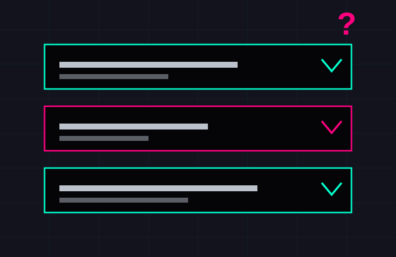

Carte web et annuaire, GIS CIMES
Carte Leaflet filtrable, formulaire relié à MySQL par une API PHP et back-office sécurisé.
Voir la réalisation CIMES (nouvel onglet)Une application web sur mesure remplace les tableurs, les e-mails et les fichiers partagés par un outil unique, adapté à votre métier. Pour le GIS CIMES (ISTHIA), nous avons conçu une carte Leaflet qui filtre projets, partenaires et territoires, alimentée automatiquement par un formulaire.

Pour le projet européen POCTEFA PITON, nous avons refondu des sites en HTML5, CSS et JavaScript avec un back-end PHP, une base MySQL et un espace de gestion des contenus. Chaque site est pensé pour le référencement naturel (SEO) : structure de titres claire, balises, plan du site et données structurées.
L’automatisation supprime les ressaisies et les copier-coller qui font perdre du temps à une petite structure. Notre plateforme Pelify identifie des lieux de tournage en Occitanie et les place sur une carte, avec un système de cache pour maîtriser les coûts. Cette logique s’adapte à vos données : collecte, contrôle, enrichissement, restitution.
La mise en conformité RGPD d’une TPE, d’une PME, d’une association ou d’une collectivité commence par la documentation de vos traitements de données personnelles. Nous intégrons ensuite les exigences dès la conception : droits d’accès et de suppression, minimisation, durées de conservation.
Nous accompagnons la mise en œuvre technique et documentaire. Nous ne remplaçons ni un DPO désigné ni un avocat.
Carte Leaflet filtrable, formulaire relié à MySQL par une API PHP et back-office sécurisé.
Voir la réalisation CIMES (nouvel onglet)Refonte de sites HTML5, PHP et MySQL avec gestion des contenus et API REST.
Voir la réalisation PITON (nouvel onglet)Plateforme cartographique avec pipeline assisté par IA et cache multi-niveaux.
Voir la réalisation Pelify (nouvel onglet)PELIFY est une micro-entreprise de conseil en systèmes et logiciels informatiques, basée à Foix, en Ariège (Occitanie). Développeur freelance, nous intervenons à distance partout en France et sur site en Occitanie, de l’Ariège à Toulouse. Notre mission : transformer vos données et vos processus en outils numériques utiles, que vos équipes s’approprient, tout en protégeant les données personnelles de vos utilisateurs.
Nous partons de votre métier avant d’écrire du code : qui saisit quoi, où, avec quelles données. Nous livrons ensuite un outil documenté, que votre équipe peut reprendre.
Nous concevons des outils simples, adaptés à vos usages réels, pas des usines à gaz.
Code documenté et transmis, chiffres issus de vos données, IA limitée à des brouillons relus.
Minimisation des données, durées de conservation et accessibilité intégrées dès la conception.
PELIFY est portée par Corneille Ehou, étudiant en Master TIC appliquées au développement des territoires touristiques (ISTHIA, Université Toulouse Jean Jaurès), major de promotion en première année et sélectionné parmi les 27 Talents du tourisme en Occitanie 2026. Il est aussi ouvert à un CDI qui mobilise ces compétences.

Les ressaisies entre formulaires, tableurs et bases de données, les imports de fichiers, le contrôle qualité des données et la production de rapports périodiques, avec des scripts Python ou PHP et des API REST.
Oui, sur le plan opérationnel : registre des traitements, analyse d’impact (AIPD), minimisation des données, durées de conservation, politique de confidentialité et recueil du consentement. Nous n’agissons pas comme DPO désigné et ne donnons pas de conseil juridique.
HTML5, CSS3, JavaScript, PHP, Python (FastAPI), MySQL, API REST, Leaflet et QGIS pour la cartographie.
À distance partout en France, et sur site en Occitanie, depuis Foix en Ariège.
Oui. Nous accompagnons les TPE, PME, associations et collectivités qui veulent remplacer des fichiers éparpillés par un outil numérique simple, documenté et que leurs équipes peuvent reprendre.
Décrivez-nous qui saisit quoi, dans quel fichier et avec quelles données personnelles, par e-mail à contact@pelify.app ou par téléphone. Nous répondons avec une première piste et un ordre de grandeur de délai.
Oui. Chaque outil est livré avec un code documenté et transmis, pour que votre équipe puisse le faire évoluer ou le confier à un autre prestataire.
De façon encadrée : les chiffres proviennent toujours des données, et l’IA se limite à la rédaction de brouillons relus par une personne.